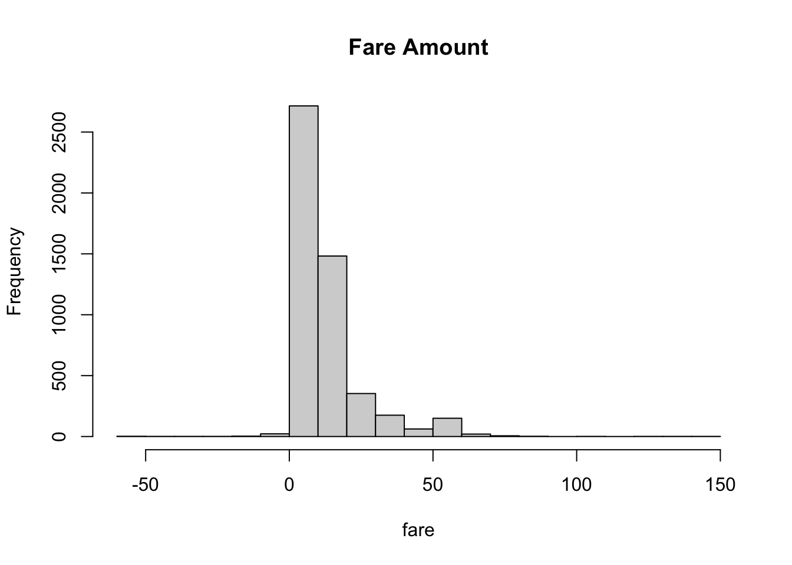
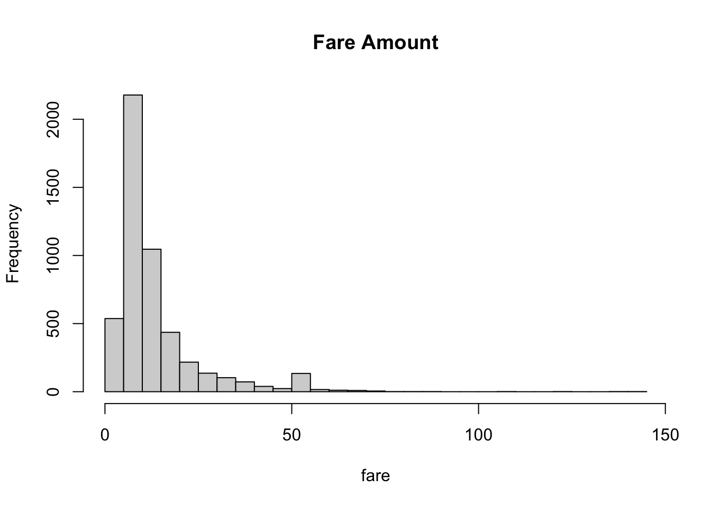

Chapter 3 [Model 1]
library(OneR)
library(ggplot2)
library(forcats)
library(dplyr)taxi_data <- read.csv('data/2021_taxi_data_mod.csv')Split into test and train:
set.seed(5293)
n <- nrow(taxi_data)
train <- sample(n, .8*n)
train_dat <- taxi_data[train, ]
test_dat <- taxi_data[-train, ]
head(train_dat)## X.1 X VendorID tpep_pickup_datetime tpep_dropoff_datetime
## 6155 6502 10586561 2 06/15/2021 08:44:23 AM 06/15/2021 08:50:13 AM
## 10 13 30109014 2 12/22/2021 01:38:45 AM 12/22/2021 01:41:03 AM
## 3649 3853 22411638 1 10/16/2021 05:02:12 PM 10/16/2021 05:14:05 PM
## 4464 4715 11680245 2 06/26/2021 07:39:15 PM 06/26/2021 07:57:34 PM
## 8927 9430 7392617 1 05/08/2021 12:38:13 PM 05/08/2021 12:55:38 PM
## 9333 9866 29485133 1 12/15/2021 11:28:12 PM 12/15/2021 11:56:29 PM
## passenger_count trip_distance RatecodeID store_and_fwd_flag PULocationID
## 6155 5 0.98 1 N 237
## 10 1 1.02 1 N 140
## 3649 0 1.20 1 N 186
## 4464 2 4.68 1 N 234
## 8927 1 1.80 1 N 249
## 9333 1 6.40 1 N 48
## DOLocationID payment_type fare_amount extra mta_tax tip_amount
## 6155 163 1 6.0 0.0 0.5 0.93
## 10 263 1 5.0 0.5 0.5 1.76
## 3649 107 1 9.0 2.5 0.5 2.45
## 4464 238 1 16.5 0.0 0.5 2.00
## 8927 4 1 12.0 2.5 0.5 3.05
## 9333 181 1 23.5 3.0 0.5 5.45
## tolls_amount improvement_surcharge total_amount congestion_surcharge
## 6155 0 0.3 10.23 2.5
## 10 0 0.3 10.56 2.5
## 3649 0 0.3 14.75 2.5
## 4464 0 0.3 21.80 2.5
## 8927 0 0.3 18.35 2.5
## 9333 0 0.3 32.75 2.5
## tipped tip_percent tip high_fare pickup dropoff
## 6155 1 0.1550000 1 0 2021-06-15 08:44:23 2021-06-15 08:50:13
## 10 1 0.3520000 1 0 2021-12-22 01:38:45 2021-12-22 01:41:03
## 3649 1 0.2722222 1 0 2021-10-16 17:02:12 2021-10-16 17:14:05
## 4464 1 0.1212121 1 0 2021-06-26 19:39:15 2021-06-26 19:57:34
## 8927 1 0.2541667 1 0 2021-05-08 12:38:13 2021-05-08 12:55:38
## 9333 1 0.2319149 1 1 2021-12-15 23:28:12 2021-12-15 23:56:29
## duration season pickup_borough dropoff_borough
## 6155 5.833333 summer Manhattan Manhattan
## 10 2.300000 winter Manhattan Manhattan
## 3649 11.883333 autumm Manhattan Manhattan
## 4464 18.316667 summer Manhattan Manhattan
## 8927 17.416667 spring Manhattan Manhattan
## 9333 28.283333 winter Manhattan Brooklyn# one thing to note- I struggled for a bit before realizing that I needed to make my tip column
# into a factor with 2 levels: 0 and 1!
mod <- OneR(factor(tip) ~ pickup_borough + dropoff_borough + passenger_count + high_fare, data = train_dat)
summary(mod)##
## Call:
## OneR.formula(formula = factor(tip) ~ pickup_borough + dropoff_borough +
## passenger_count + high_fare, data = train_dat)
##
## Rules:
## If dropoff_borough = Bronx then factor(tip) = 0
## If dropoff_borough = Brooklyn then factor(tip) = 1
## If dropoff_borough = EWR then factor(tip) = 1
## If dropoff_borough = Manhattan then factor(tip) = 1
## If dropoff_borough = Queens then factor(tip) = 1
## If dropoff_borough = Staten Island then factor(tip) = 0
## If dropoff_borough = unknown then factor(tip) = 1
##
## Accuracy:
## 5346 of 7568 instances classified correctly (70.64%)
##
## Contingency table:
## dropoff_borough
## factor(tip) Bronx Brooklyn EWR Manhattan Queens Staten Island unknown Sum
## 0 * 39 104 2 1915 152 * 2 31 2245
## 1 18 * 164 * 10 * 4926 * 159 0 * 46 5323
## Sum 57 268 12 6841 311 2 77 7568
## ---
## Maximum in each column: '*'
##
## Pearson's Chi-squared test:
## X-squared = 125.79, df = 6, p-value < 2.2e-16plot(mod)
mean(predict(mod, train_dat) == train_dat$tip)## [1] 0.7063953mean(predict(mod, test_dat) == test_dat$tip)## [1] 0.7311146Interestingly, I have an accuracy of 66% for the training data, and an even higher accuracy of 66.7% for the test data. Compared to an overall frequency of 64.8% for tipped > 15%, this doesn’t seem like that much of an information gain and the test accuracy being higher is a little odd.
Something interesting came up with the OneR function as I was running this. I noticed that for the Brooklyn column, OneR classified it as 1 when from my explorations, I knew that Brooklyn should have been classified as 0 since there were more instances of 0 than 1 in the data.
ggplot(train_dat, aes(fct_infreq(dropoff_borough), fill = factor(tip))) + geom_bar(position = "dodge") # contains rows with NAs As we can see, the relative frequencies for Brooklyn were 88 for 0 and 86 for 1, which means that OneR should have classified Brooklyn as 0 instead of 1 as it did in the model. However, OneR said there were 60 instances of 0 and 76 instances of 1 in the data. Why were some of the data points missing?
As we can see, the relative frequencies for Brooklyn were 88 for 0 and 86 for 1, which means that OneR should have classified Brooklyn as 0 instead of 1 as it did in the model. However, OneR said there were 60 instances of 0 and 76 instances of 1 in the data. Why were some of the data points missing?
train_dat[complete.cases(train_dat),] |> group_by(dropoff_borough, factor(tip)) |> count() |> ggplot(aes(reorder(dropoff_borough, -n), n, fill = `factor(tip)`)) + geom_col(position="dodge")
Now that we’ve removed all the rows with NA, we see the same results that OneR showed in the summary. It turns out this was all because the OneR function has been tossing any rows with NAs in it. This was good to know, and maybe this should have been more clear in the documentation!
Based on the OneR analysis, it seems that dropoff borough is the most important in determining whether or not a rider will tip over 15% on their ride, and it categorizes at 66.7% accuracy. However, we already know that 65% of all rides are classified as over 15% tip so we’re not sure how much information we’re gaining. As we can see from the plot, there are 5 categories (Bronx, Brooklyn, Manhattan, Queens, and unknown borough). Riders who are picked up in Manhattan have the highest rate of tipping over 15%, and riders who are picked up from the Bronx have the lowest rate of tipping over 15%. This made sense intuitively when I looked up the median household income for the different boroughs after making this plot. Highest to lowest median income goes Manhattan, Staten Island, Queens, Brooklyn, then Bronx which is the same order for tipping >15% in this plot.
For each borough, it’s showing the relative frequencies which shows that Manhattan has the most rides. It also shows very few data points for EWR, Bronx, and unknown. It’s possible that those with fewer points would be skewed towards more 0’s than 1’s so that’s something to keep in mind.
# testing
library(rpart)
library(rpart.plot)
mod1 <- rpart(tip ~ pickup_borough + dropoff_borough + season + high_fare, data = train_dat,
method="class",
control=rpart.control(cp=0))
rpart.plot(mod1, main = "tip", under=TRUE)